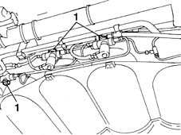
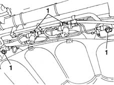
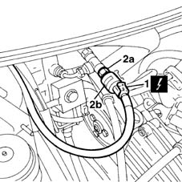
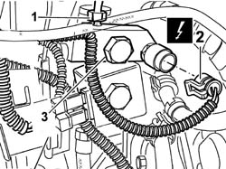

1058A44 CNG/FUEL SWITCH - R R
- Path
- Procedures > 10 ENGINE UNIT > 1058 GAS CIRCUIT > 1058A GAS CIRCUIT MULTI POINT INJECTION > 1058A44 CNG/FUEL SWITCH - R R
- Kind
- repair procedure (removal / refitting; the operation number is the code)
- Applies to
- engines: 1.6 16v; all production periods; only with equipment: BIPOWER and BLUPOWER
- Interactive page
- https://sloeber94.github.io/elrnDB-fMltpl/en/#/2891480
Applies to: engines: 1.6 16v; production: fino a 05/04; only with equipment: BIPOWER and BLUPOWER
 Removing
Removing
 Refitting
RefittingPlace the car on a ramp.
Disconnect the battery negative terminal.
Raise the ramp.
Applies to: engines: 1.6 16v; production: fino a 05/04; only with equipment: BIPOWER and BLUPOWER
1. Before working with the canisters, close the CNG cut out manual valves to prevent the escape of gas.

Applies to: engines: 1.6 16v; production: fino a 05/04; only with equipment: BIPOWER and BLUPOWER
1. Before working with the canisters, close the CNG cut out manual valves to prevent the escape of ga.

Applies to: engines: 1.6 16v; production: fino a 05/04; only with equipment: BIPOWER and BLUPOWER
Lower the vehicle.
1. Disconnect the electrical connection for the pressure sensor.
2. Undo the connector (2a) and remove the pressure sensor (2b) from the three-way high pressure connector.

Applies to: engines: 1.6 16v; production: fino a 05/04; only with equipment: BIPOWER and BLUPOWER
Refitting
RemovingFit the pressure sensor and tighten the connector to torque.
 | Fastening | Component | Ø | Value (daNm) |
|---|---|---|---|---|
- | Nut | CNG REPRESSURIZING PIPE CONNECTORS | M10 | 2.5 |
Connect the sensor electrical connection.
Open the CNG cut out manual valves.
Connect the battery negative terminal.
Remove the vehicle from the ramp.
Applies to: engines: 1.6 16v; production: da 06/04; only with equipment: BIPOWER
Removing
RefittingPosition the vehicle on a lift.
Proceed with draining the high pressure circuit following the instructions in the specific operation
Op. 1042A02 C.N.G. - FUEL SYSTEM SAFETY CHECK
1. Disconnect the high pressure methane supply pipe.
2. Disconnect the electrical connection for the methane pressure sensor.
Description | Connector |
|---|---|
Methane pressure sensor |
3. Undo the bolt and remove the pressure sensor complete with connector.

Applies to: engines: 1.6 16v; production: da 06/04; only with equipment: BIPOWER
Refitting
RemovingFit the connector complete with methane pressure sensor taking care to position the seal underneath correctly.
Tighten the bolt fixing the methane pressure sensor and connector to the recommended torque.
Fastening | Component | Ø | Value (daNm) | |
|---|---|---|---|---|
- | Bolt | CNG MPI PRESSURE SENSOR | - | 2.2 |
Connect the methane high pressure pipe connector.
Connect the electrical connection for the methane pressure sensor.
Move the CNG cut-off solenoids to open position by hand and check system is efficient.
Connect the Examiner diagnostic equipment in the "Active Diagnosis" ambient, select and carry out "Gas solenoid valve relay" item in order to allow the opening of the solenoid valves and the renewal of the CNG system operating pressure; read the pressure value on the sensor located on the pressure reduction unit in the engine compartment which should be greater than or equal to 14 bar, otherwise it will not be possible to switch from petrol to methane.
Remove the vehicle from the lift.
Op. 1042A06 C.N.G. - FUEL SYSTEM CHECK FOR ANY LEAKS USING ELECTRONIC DETECTOR FOLLOWING OPERATIONS